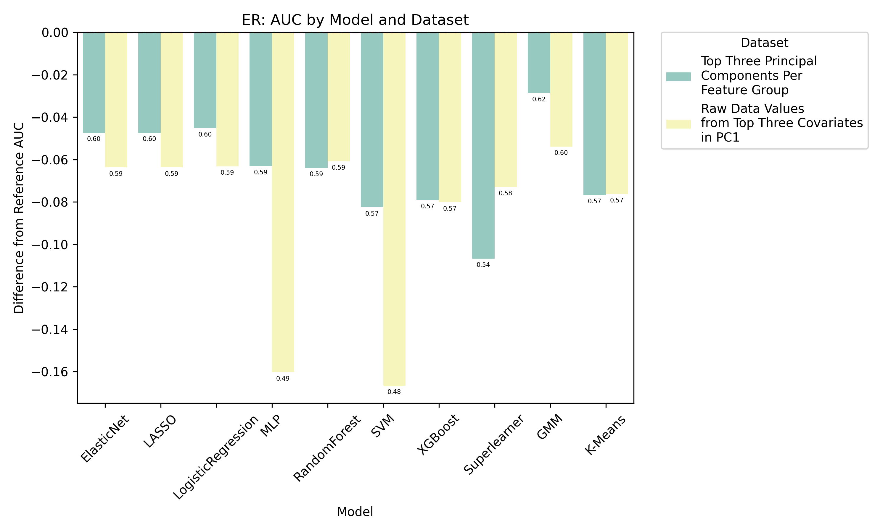
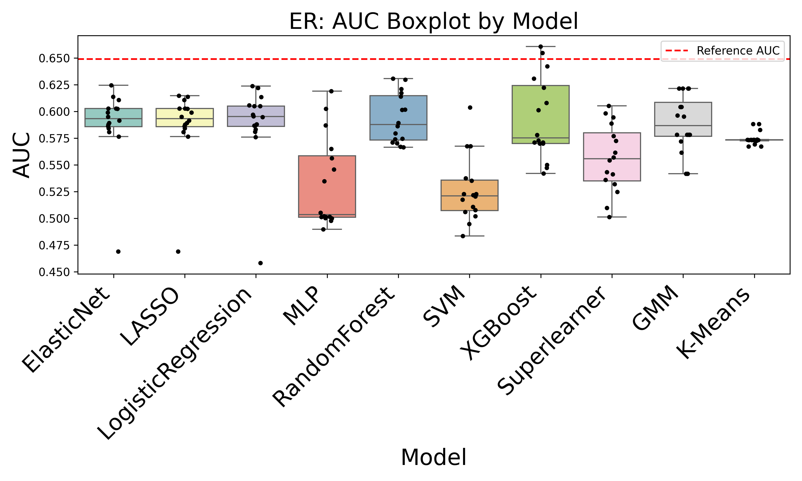
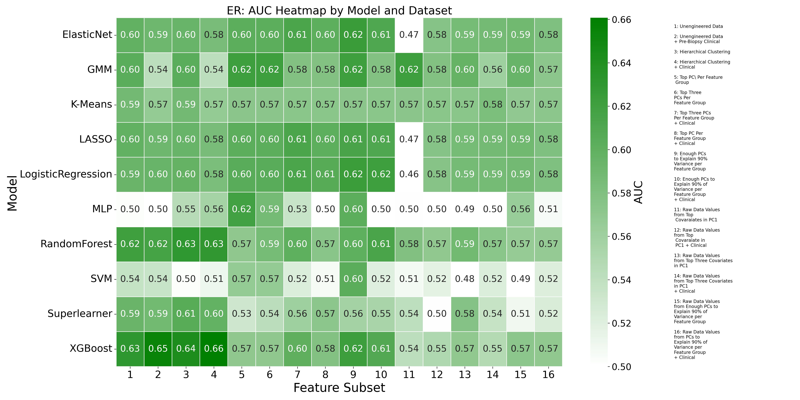
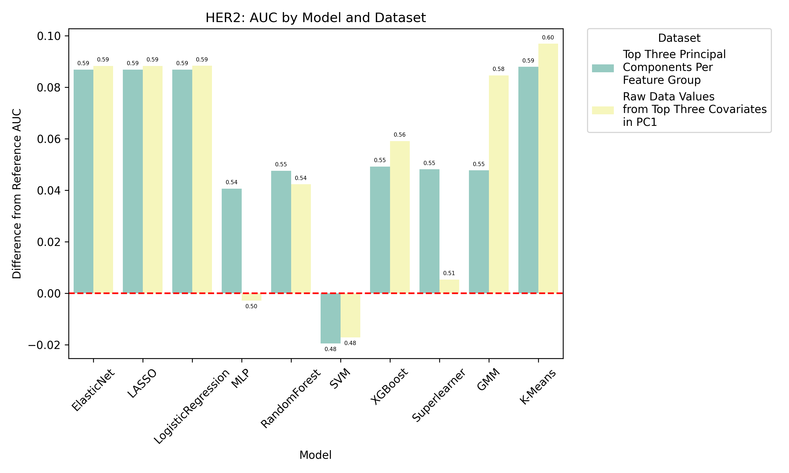
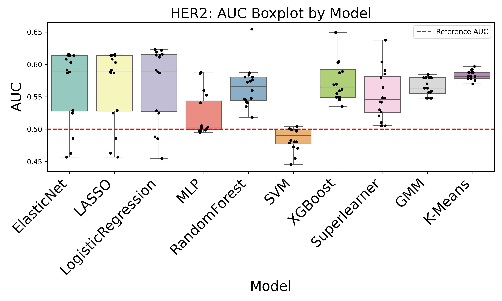
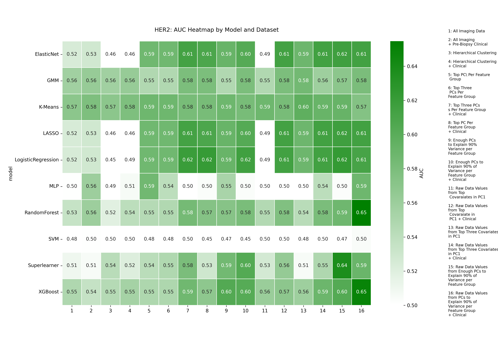
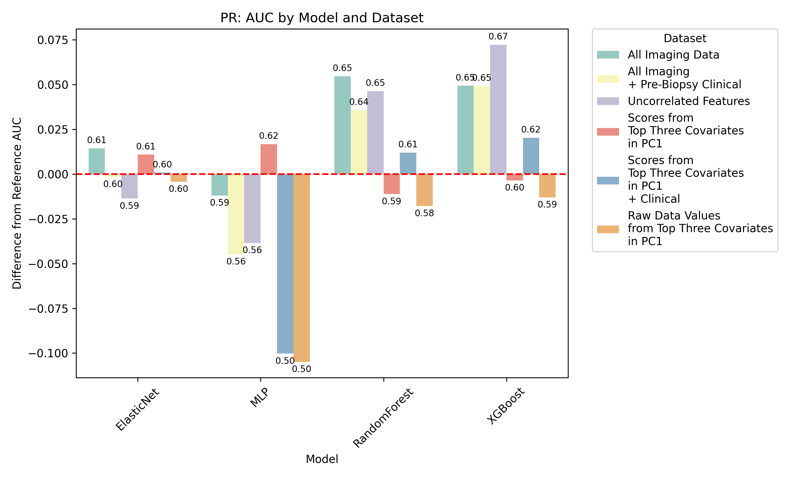
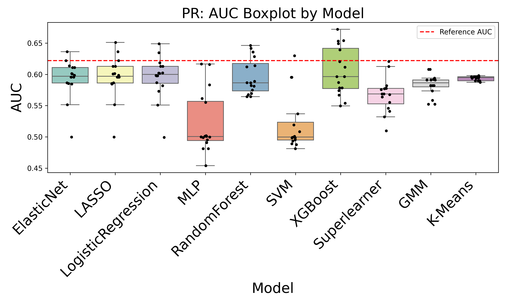
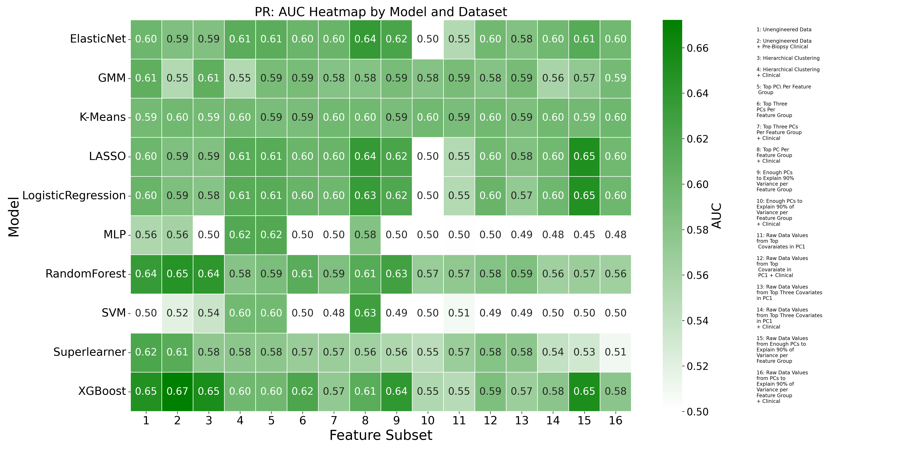

Final Symposium Presentation
Objective: Develop and evaluate machine learning models using radiomics features to predict molecular subtypes of breast cancer.
Estrogen Receptor
Human Epidermal Growth Factor Receptor 2
Progesterone Receptor
Ensemble methods, neural networks, and traditional classifiers



Key Findings: Comprehensive model performance analysis showing optimal algorithms for ER prediction with detailed AUC metrics and feature importance rankings.



Key Findings: HER2 biomarker prediction models demonstrate strong performance across multiple algorithms with consistent validation results.



Key Findings: PR receptor analysis reveals important patterns in model performance and feature contributions to prediction accuracy.
Identified top-performing algorithms for each biomarker with statistical significance testing.
Comprehensive feature importance analysis revealing key predictive variables.
Robust cross-validation ensuring generalizability and preventing overfitting.
Results provide actionable insights for cancer biomarker prediction in clinical settings.
Advancing precision medicine through AI
Impact: Contributing to precision medicine and improved patient outcomes
BDSI Imaging Subgroup
Radiomics & Breast Cancer Research